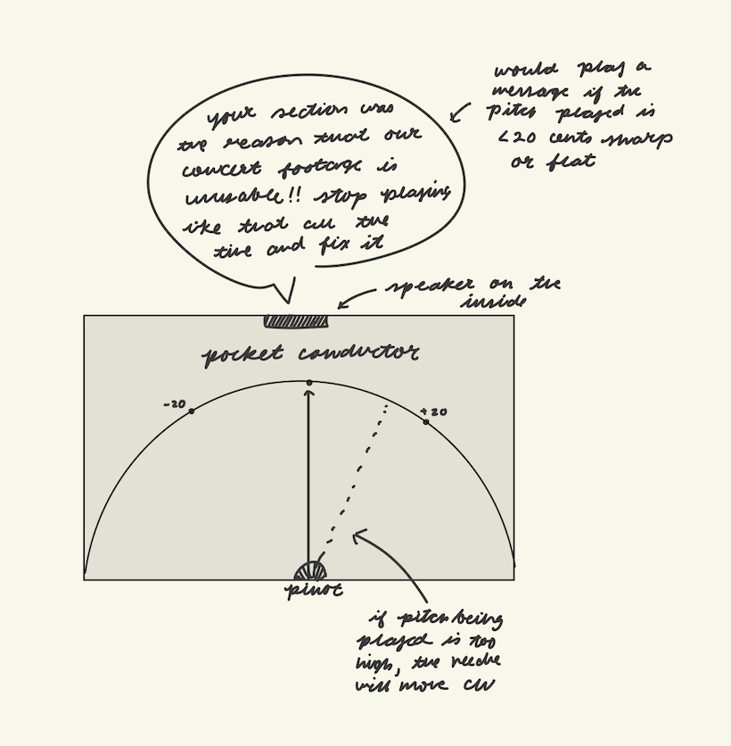
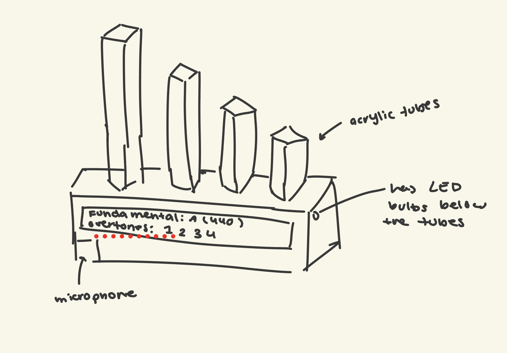

Week 1: Final Project Proposal
1. Pocket Conductor
I love music, I play the flute and piccolo, and one of the big challenges is staying in tune. I see that when I am in orchestra, my conductor keeps musicians in tune by yelling at us.
 But, at home, many of us do not have the same enviroment. So, I wanted to repilicate the same nurturing? enviroment to optimize intonation. When it is finished, I hope my project looks like a tuner, a box with demarcations noting 440 Hz as well as 30 Hz below or above, with a needle that moves according to the pitch the microphone picks up. Then, if the player is egregiously out of tune, the tuner will play an inspiring and slightly mean message.
But, at home, many of us do not have the same enviroment. So, I wanted to repilicate the same nurturing? enviroment to optimize intonation. When it is finished, I hope my project looks like a tuner, a box with demarcations noting 440 Hz as well as 30 Hz below or above, with a needle that moves according to the pitch the microphone picks up. Then, if the player is egregiously out of tune, the tuner will play an inspiring and slightly mean message.

2. Overtone Visualizer
When different instrumets play the same note, their timbre is different because each instrument vibrates different sets of overtones. I think it could be interesting to create a device that dispalys which combination of overtones a certain voice or instrument vibrates to show the difference in timbre in a visual way. When a note is played, it could detect the fundamental frequency, and then, according to the different overtone sensed, it would light up different acrylic tubes.

3. Automatic Blinds
I really hate it when my room is super bright, so I think it could be cool to automte my blinds to react to the sunlight outside. There could be a little sensor in the top corner, and according to the amount of lux detected, it could open or close the blinds. I have less of an idea of how this one would work, because I'm not sure how I would get it to actually close the blinds. But, there would be a light sensor facing outside the window, and based on if what is detenced is above/below a certain limit, the blinds would close.